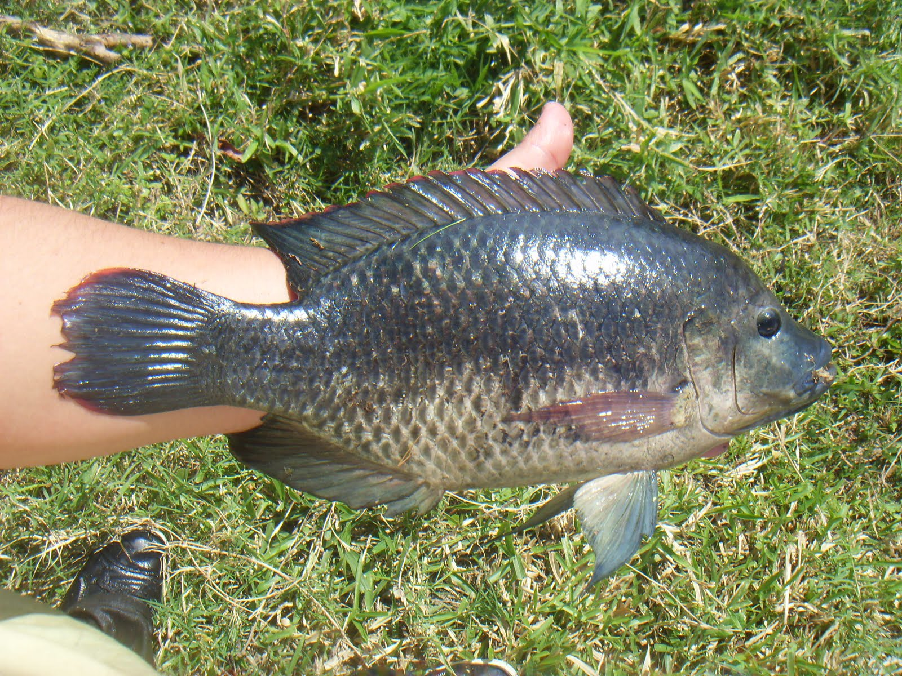

Descubre todo sobre estos fascinantes peces
Producción de mojarra (acuicultura) La mojarra es uno de los alimentos más populares y de consumo creciente en el mundo, loque ha originado que varios países se dediquen al cultivo de esta especie de alto valor comercial, esto se debe en parte a la sobre explotación de los recursos pesqueros que ha venido generando una demanda de los productos marinos de alta calidad en países desarrollados. Objetivo: Producir mojarra a gran escala, utilizando los recursos que puede ofrecer el lago de Temazcal, para disminuir los gastos de crecimiento disminuyendo el precio final al consumidor. Incrementar la producción de producto nacional en busca de la disminución de importación de mojarra de otros países. Misión: producir mojarra a menor precio para los consumidores, utilizando los recursos naturales a su alcance con una menor inversión Visión: beneficiar al productor y consumidor de mojarra tilapia, ofreciendo calidad y buen precio..
